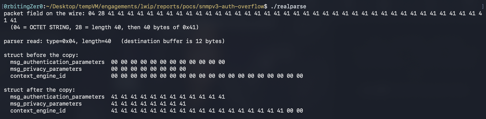

This one's quick compared to the last few. While I was working on CCSDS (which is where I have been spending most of my evenings), I came across lwIP, the lightweight TCP/IP stack that ends up in a huge amount of embedded and IoT kit.
Nowadays I don't trust anything, so before I run something I give the code a quick pass with my own code auditor. This time it flagged a suspicious commented-out line in the SNMPv3 parser.
How the parser works
Turning SNMP in lwIP means calling snmp_init() once, which opens a UDP socket on port 161. From then on, every packet to that port goes to snmp_receive() (snmp_msg.c:286):
void
snmp_receive(void *handle, struct pbuf *p, const ip_addr_t *source_ip, u16_t port)
{
err_t err;
struct snmp_request request;
memset(&request, 0, sizeof(request));
request.handle = handle;
request.source_ip = source_ip;
request.source_port = port;
request.inbound_pbuf = p;
snmp_stats.inpkts++;
err = snmp_parse_inbound_frame(&request);
request is an ordinary local variable, so it lives on snmp_receive's stack frame. The function zeroes it, hands it to snmp_parse_inbound_frame(), and everything the parser decodes gets written back into it.
That's what makes a bug here interesting: snmp_receive's saved return address sits on the same frame as request. So an overflow that runs off the end of a field heads through the rest of the struct and, far enough, into that return address.
Inside snmp_parse_inbound_frame, the part that matters is the SNMPv3 security header. It's the layer that's supposed to authenticate the request. RFC 3414 defines it as six fields in a fixed order, and the parser decodes them in exactly that order (snmp_msg.c:905-963): the engine ID, two counters (boots and time), the user name, the authentication parameters, and the privacy parameters.
The sender controls how long the engine ID, the user name, and the auth and privacy parameters are. On the receiving side, each gets a fixed-size buffer inside struct snmp_request, capped by a constant in snmpv3_priv.h:
#define SNMP_V3_MAX_ENGINE_ID_LENGTH 32
#define SNMP_V3_MAX_USER_LENGTH 32
#define SNMP_V3_MAX_AUTH_PARAM_LENGTH 12
#define SNMP_V3_MAX_PRIV_PARAM_LENGTH 8
Each field is decoded the same way: read its length off the wire, then call snmp_asn1_dec_raw() to copy that many bytes into the field's buffer, bounded by the buffer's size. Here's the user name field, done right, at snmp_msg.c:935:
IF_PARSE_EXEC(snmp_asn1_dec_raw(&pbuf_stream, tlv.value_len, request->msg_user_name,
&u16_value, SNMP_V3_MAX_USER_LENGTH));
tlv.value_len is the length the sender put on the wire. The last argument (SNMP_V3_MAX_USER_LENGTH), as we saw, is the size of the destination. The copy function compares the two and refuses to write more than the destination can hold.
Now the authentication parameters field, a few lines down at snmp_msg.c:949-950:
/* Read auth parameters */
/* IF_PARSE_ASSERT(tlv.value_len <= SNMP_V3_MAX_AUTH_PARAM_LENGTH); */
IF_PARSE_EXEC(snmp_asn1_dec_raw(&pbuf_stream, tlv.value_len, request->msg_authentication_parameters,
&u16_value, tlv.value_len));
This is that commented line. The user name field above passed SNMP_V3_MAX_USER_LENGTH, the size of its destination. This call passes tlv.value_len, the same sender-controlled length it already uses as the read length. It was written that way from the start, in 2016. It was safe only because the IF_PARSE_ASSERT on the line above rejected any oversized field before the copy ran. That assert has been commented out, and it was the only check keeping an oversized field out of this 12-byte buffer.
Here's what snmp_asn1_dec_raw does with that:
err_t
snmp_asn1_dec_raw(struct snmp_pbuf_stream *pbuf_stream, u16_t len, u8_t *buf, u16_t *buf_len, u16_t buf_max_len)
{
if (len > buf_max_len) {
/* not enough dst space */
return ERR_MEM;
}
*buf_len = len;
while (len > 0) {
PBUF_OP_EXEC(snmp_pbuf_stream_read(pbuf_stream, buf));
buf++;
len--;
}
return ERR_OK;
}
It checks incoming length against destination size. For the auth field, len and buf_max_len are the same value, so it's checking x > x, which never fires. The function copies the full length into the destination, whatever the destination's real size is.
The very next field, privacy parameters at snmp_msg.c:961, does it correctly:
IF_PARSE_EXEC(snmp_asn1_dec_raw(&pbuf_stream, tlv.value_len, request->msg_privacy_parameters,
&u16_value, SNMP_V3_MAX_PRIV_PARAM_LENGTH));
The check was there when SNMPv3 was first added in 2016. It was commented out on 2017-03-01, in a commit titled "Added handling invalid packets in SNMPv3".
What else
Once the copy runs off the end of the 12-byte auth slot, it walks straight through the fields sitting after it in the struct. A big enough write carries on past the rest of the struct and into the function's saved return address, which on a small embedded target with no stack protection is how an attacker usually takes control.
To see it for real, I fed an oversized authentication-parameters field into lwIP's actual parser (the same snmp_asn1_dec_raw from above, compiled straight from source). It reads the length from the packet and copies that many bytes into the 12-byte buffer, running off the end into msg_privacy_parameters and then context_engine_id:

That is the out-of-bounds write before any authentication. Whether it reaches the saved return address is target-dependent and a separate step.
Impact
The 9.3 is the worst case: a pre-auth remote code execution on a target with no stack protection. What I actually proved is the write. I do believe that the real-world reach is narrow, though. SNMP is off by default, and SNMPv3 is a second opt-in on top. Also only SNMPv3 is affected, SNMPv1 and v2c use a different path.
The bad part is that it has been in the code since 2017, about nine years, and shipped in every release from 2.1.0 to 2.2.1. lwIP is also the default TCP/IP stack in a lot of vendor platforms, most notably Espressif's ESP-IDF (via the esp-lwip fork) and STMicroelectronics' STM32Cube, among others.
Till next time 🚀
Timeline
| Date | Event |
|---|---|
| 2017-03-01 | Vulnerability introduced (commit f092d091) |
| 2026-03-22 | Discovery |
| 2026-03-22 | Private disclosure via Savannah |
| 2026-05-18 | CVE-2026-8836 assigned |
| 2026-05-18 | Upstream patch commit 0c957ec0 |